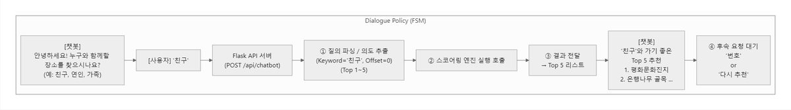
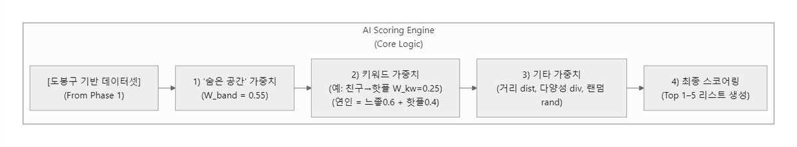
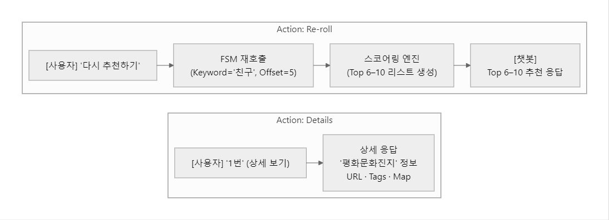

지역 접근성 지수 · 추천 챗봇
정의가 없던 '감성 공간'과 '접근성'을 수치로 만들고, 의도 기반 추천 챗봇까지 연결한 프로젝트
- '접근성이 낮다', '분위기가 좋다' 같은 말은 계속 쓰이는데 정의가 없어서 근거를 댈 수 없었습니다.
- 지하철·상권·유동인구를 질량으로 두는 Gravity Model로 접근성을 계산하고, 주관적 표현은 규칙으로 적어 재현 가능하게 만들었습니다.
- 접근성 하위 20%에 해당하는 152곳을 도출하고, 복합 의도에 대응하는 추천 챗봇까지 연결했습니다.


문제 🤔
숨은 명소를 발굴하려면 먼저 '접근성이 낮다'와 '분위기가 좋다'를 측정 가능한 값으로 정의해야 했습니다.
접근 🛠
- 접근성은 Gravity Model로 계산했습니다. 지하철·상권·유동인구를 질량으로 두고, 거리는
Haversine으로 구해 거리 감쇠를 적용했습니다. - 감성 표현은
FSM 기반 태그 로직으로 규칙화해 주관적 표현을 재현 가능한 분류로 바꿨습니다. - 여러 신호를 가중 합해 하나의 점수로 통합했습니다 —
0.55×band + 0.25×kw + 0.10 + 0.05 + 0.05. - 접근성 하위 20%를 percentile 컷으로 잘라 152곳을 도출했습니다.
- 연인·가족·친구처럼 복합 의도가 섞인 질의에 대응하도록 다중 Intent 구조로 확장하고 Flask REST API로 열었습니다.
결과 📈
접근성 하위 20%에 해당하는 152곳을 도출했고, /api/recommend 기반 추천 챗봇을 완성해 분석 결과가 서비스로 이어지는 형태까지 만들었습니다.
이 프로젝트에서 제가 한 것 ✍
- Gravity Model 기반 접근성 지수 설계 — 지하철·상권·유동인구를 질량, Haversine 거리
- Google Places + OSM + 공공데이터 결합 파이프라인
- 감성 태그 FSM 규칙 정의 및 POI 200여 개 수작업 검토·매핑테이블 작성
- Hybrid Scoring Engine 가중치 설계, 접근성 하위 20% 152곳 도출
- 복합 의도 대응 다중 Intent 구조 + Flask
/api/recommend구현
금융 직무와의 연결 🎯
- 비정형 신호의 계량화 — 정의가 없던 개념을 규칙과 점수로 바꿨습니다. 대안 데이터 활용의 핵심 작업입니다.
- 설명 가능한 추천 — 모델 대신 규칙 기반으로 설계해 왜 그 결과가 나왔는지 답할 수 있게 했습니다.
- 다중 소스 결합 — 상용 API · 공공데이터 · OSM을 하나의 지표로 통합했습니다.
기술 선택과 판단 근거 🧭
왜 그 방법을 택했는지, 무엇을 택하지 않았는지 적었습니다.
접근성 밴드에 가장 큰 비중(0.55)을 뒀다
프로젝트 목적이 숨은 명소 발굴이었기 때문입니다. 유명한 곳을 다시 추천하는 게 아니라 접근성이 낮아 덜 알려진 곳을 찾는 게 목표라, 접근성이 지배적이어야 논리가 맞습니다.
모델이 아니라 팀이 정의한 기준으로 라벨링했다
'느좋/핫플'을 감성 분석 모델로 판정하면 왜 그렇게 나왔는지 설명할 수 없습니다. 팀이 기준을 문서로 정의하고 200여 개 POI를 수작업으로 검토해 일관성을 확보했습니다.
더 자세히
관심 있는 항목만 펼쳐 보세요.
이 프로젝트가 시작된 배경
지역 홍보에서 '접근성이 낮은 공간'이나 '분위기 좋은 곳' 같은 표현은 계속 쓰이지만 정의가 없습니다. 정의가 없으니 근거도 없고, 결국 홍보가 담당자의 감에 의존하게 됩니다.
막혔던 지점과 해결 과정 2
주관적인 표현을 점수로 바꾸는 기준을 만들어야 했다
'느좋', '핫플'은 사람마다 다릅니다. 그대로 두면 추천 결과를 설명할 수 없습니다. 리뷰 키워드와 장소 속성을 조합한 태그 규칙을 FSM으로 정의하고 밴드 점수와 키워드 점수를 가중 합했습니다. 완벽하진 않지만 왜 이 장소가 추천됐는지 설명할 수 있게 됐습니다.
FSM으로는 복합 의도를 못 잡았다
'연인이랑 갈 조용한 카페'처럼 대상과 장소 유형이 함께 오는 질의에서 FSM이 하나만 잡고 끝났습니다. 단일 Intent 가정이 문제였습니다. 다중 Intent 구조로 확장해 해결했습니다.
데이터
화면 · 시각화 더 보기 9






이 결과가 틀렸을 수 있는 지점
- 가중치(0.55/0.25/…)는 목적에 맞춰 논리적으로 배분한 값이고 데이터 기반 최적화는 하지 못했습니다.
- 라벨 일치도를 통계적으로 검증하지 않고 수작업 검토와 매핑테이블로 일관성만 확보했습니다.
- 20%/50% 기준은 단순 percentile 컷입니다.
회고
정의가 없는 대상을 다룰 때는 정의 자체가 산출물이 됩니다. 지표를 만들고 그 근거를 문서로 남기는 일이 모델링만큼 중요했습니다.